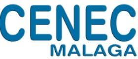

Información del centro: 

Sobre Mi
Hola me llamo Guzman y soy estudiandte de DAM en cenec Málaga. Siempre me han gustado los ordenadores , la ciencia y todo lo relacionado a las tecnologías. La programacion para mi es un mundo muy interesante lleno de retos y de futuro. Sobre todo el mundo de la inteligencia artificial , el bigdata y la ciberseguridad. Son capas que me llaman mucho la atencion auque pensando en inteligencia artificial son palabras mayores en cuestion de dificultad. Solo espero que con practica y esfuerzo pueda conseguir mis objetivos en esta carrera que acabo de empezar.

¿Por qué elegí DAM?
Elegi DAM por una promesa que me hice a mi mismo hace tiempo y era que si volvia a estudiar en mi vida , iva a ser programacion. Vengo de trabajar en la hosteleria y probar varios sectores , como las finanzas. Pero , nada me ha parecido tan interesante como este mundo en el que me estoy adentrando y todo lo que conlleva.Viendo que es el futuro y que no es muy lejano esto hace que me motive mas.